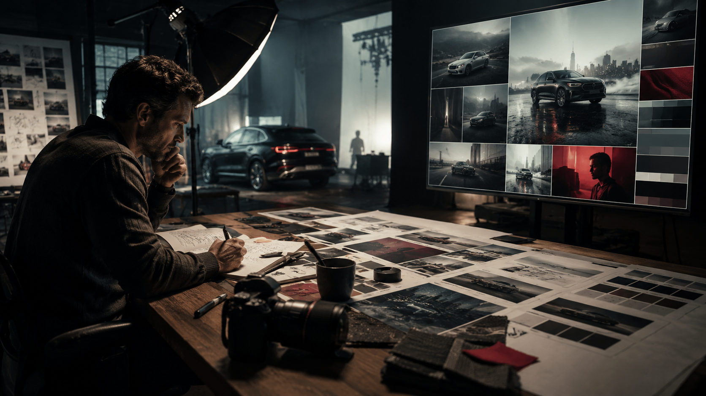
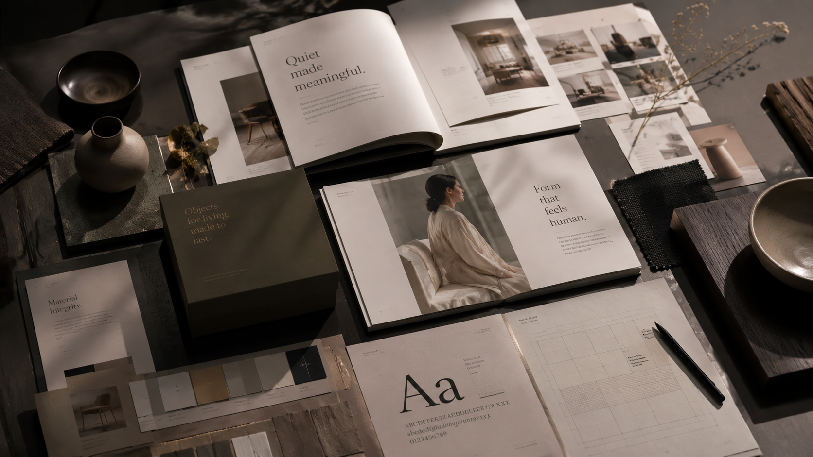
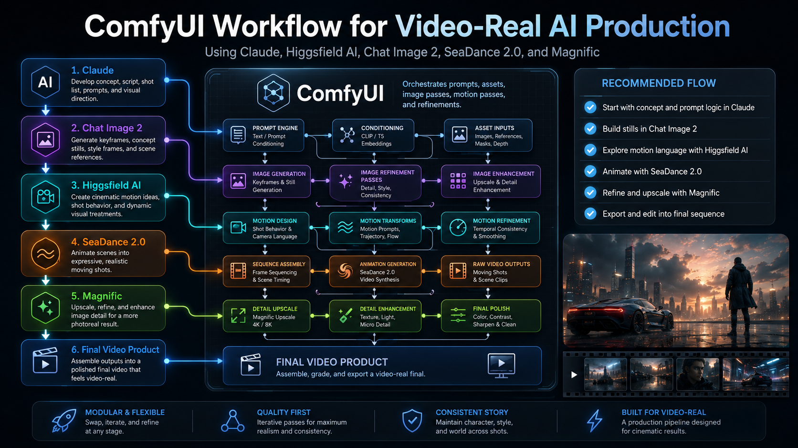

Visual sampleCommercial photo direction
Volkswagen and Coca-Cola photography experience translated into AI image direction, prompt notes, and brand consistency.
01 Home · AI creative technologist · visual storyteller · teacher
At Kreative AI, I combine AI graphics, video, coding, teaching, branding, and visual storytelling with 26 years of photography and production experience so ideas become clear, useful, and ready to share.
02 What I do
My AI work is grounded in real commercial image-making: photography for Volkswagen and Coca-Cola, DriverGear catalog design, 26 years of photo experience, and hands-on video production.
I use real photography experience to guide AI image tools: lighting, lens feel, angle, aperture, depth of field, subject styling, setting, mood, and brand consistency. That eye comes from 26 years of photo work, including photography for Volkswagen and Coca-Cola.
I shape ideas into scenes, sequences, storyboards, scripts, shot lists, and motion prompts for AI video tools and short-form content, backed by hands-on video production experience.
I use AI-assisted coding to build landing pages, small apps, prompt generators, AI helpers, booking flows, content tools, and workflow prototypes.
I connect visuals, copy, prompts, audience segments, and content formats so AI output feels intentional rather than disconnected. My background includes designing the Volkswagen DriverGear catalog, where visual organization, product story, and brand consistency all had to work together.
I explain AI tools in human language and help people learn how to prompt, evaluate, revise, verify, and apply outputs to real work.
03 Tool fluency
This list changes often. Consider this the current Kreative AI tool update for this week.
Select a tool to see the kind of work, prompts, and outcomes it supports.
Nano-Banana, Chat Image 2, LLM-guided image prompting, reference images, style controls, composition, lighting, color, and post-production cleanup.
SeaDance 2.0, Veo3, Kling, Runway, cinematic prompting, shot sequencing, visual continuity, social video concepts, and storyboard-to-motion workflows.
HTML, CSS, JavaScript, Python, front-end prototypes, AI agents, prompt tools, forms, local workflows, and rapid iteration.
LLMs, PINOKIO, REST APIs, CMS thinking, Contentful/Braze-style handoffs, personalization logic, prompt libraries, naming systems, and asset pipelines.
04 Proof areas

Visual sampleVolkswagen and Coca-Cola photography experience translated into AI image direction, prompt notes, and brand consistency.
A concept, script, shot list, generated stills, motion prompts, and final short-form direction.
A working Chromium extension that scans open tabs, groups them by task, saves workspaces, and creates a project summary.

Brand sampleDriverGear-style catalog thinking: product story, layout, visual hierarchy, image direction, and brand cohesion.
05 AI engagement
AI tools drop often. Understanding tools in real time makes it possible to stay on top, choose the right workflow, and combine LLMs, image models, video tools, local apps, and production judgment.
This is the value of working hands-on: not memorizing one tool, but learning how to evaluate, test, prompt, refine, and rebuild the workflow as the tools change.

06 Contact